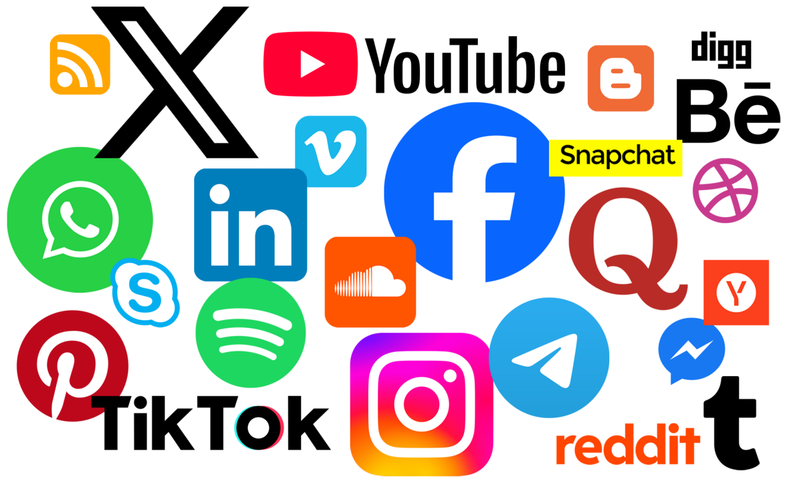
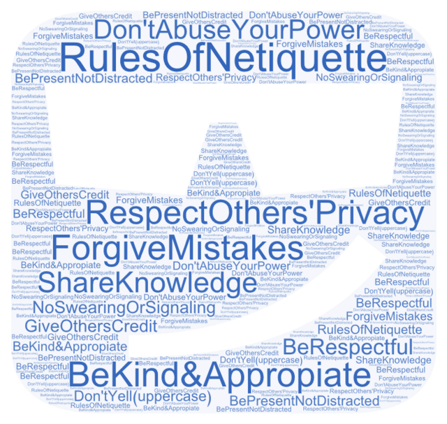
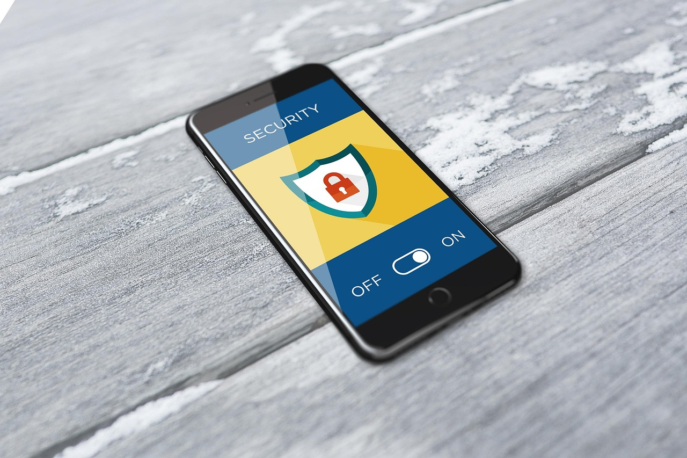
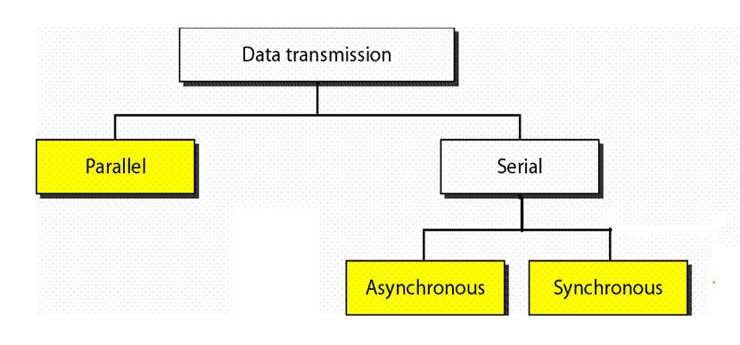

Guía rápida del aula digital
Uso de dispositivos
Fuentes de calidad
En clase usamos los dispositivos solo con fines educativos y siguiendo las indicaciones del profesor.
Evita distraerte con juegos o redes sociales durante las clases.

Netiqueta
Fuentes de calidad
Cuando participes en foros o chats del aula, escribe con respeto y sin usar mayúsculas para gritar.
Recuerda que la buena educación también se aplica en internet.

Privacidad básica
Fuentes de calidad
No compartas tus contraseñas ni información personal con otras personas.
Protégete y cuida tus datos siempre.

Demostración de etiquetas inline
Fuentes de calidad
Proteger la privacidad de las personas y sus datos es un principio básico de la ética digital.
Mantener un comportamiento respetuoso, evitando insultos o mensajes inapropiados, es fundamental para que la comunicación digital sea clara y positiva. Es importante usar la tecnología de manera responsable para aprender, comunicarse y ayudar a los demás.
Muy útil saber que utilizando la etiqueta <br> se pueden hacer saltos de línea.
Seguir principios de ética digital implica usar la tecnología de forma responsable, respetando la privacidad y los derechos de los demás al compartir información o contenidos en línea.A tener en cuenta para el futuro.

Indice
- Elementos clave
- Características
- Ejemplos
Elementos clave
- Acceso: Asegurar que todos tengan acceso a la tecnología y a la información necesaria para participar plenamente en la sociedad digital.
- Comercio: Entender cómo funciona el comercio digital y las implicaciones de las transacciones en línea.
- Comunicación: Fomentar la comunicación efectiva y respetuosa en línea, reconociendo la importancia de la empatía y el respeto hacia los demás.

- Leyes Digitales: Las leyes digitales abarcan regulaciones que rigen el uso de la tecnología e información en línea.
- Salud Digital: La salud digital se refiere al bienestar físico y mental en el uso de la tecnología.
Características
- La ciudadanía digital fomenta la participación en la vida social y política, promoviendo la democracia y la inclusión.
- Los ciudadanos deben tener acceso a información confiable y utilizar herramientas tecnológicas para su beneficio.
- Se requiere una educación digital y habilidades para navegar y utilizar las TIC de manera crítica y ética.
- Participación activa: Los ciudadanos digitales participan en asuntos públicos y privados utilizando TIC.
Ejemplos de ciudadanía digital
- Seguridad y privacidad
- No compartir contraseñas con nadie.
- Usar contraseñas seguras y diferentes para cada cuenta.
- Comportamiento ético
- No descargar contenido ilegal (películas, música, software).
- No hackear cuentas ni sistemas ajenos.
- Netiqueta y comunicación
- Ser claro y educado al pedir ayuda o información.
- Respetar a los demás en foros y chats.
Créditos